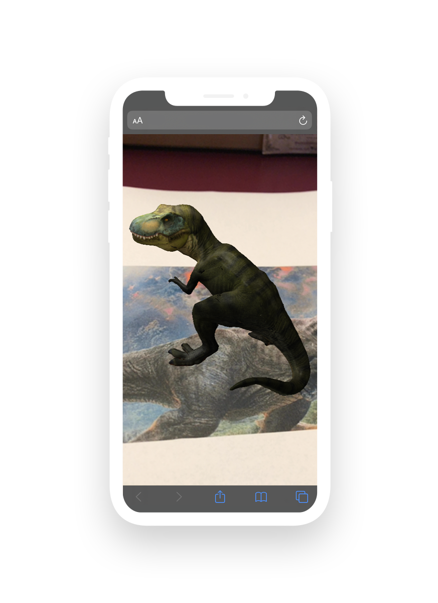

Дополненная реальность
Вы можете создавать приложения дополненной реальности, основанные на метках или изображении, и развертывать их прямо в Интернете. Это означает, что вам не нужно загружать какие-либо дополнительные приложения, чтобы получить доступ к своему приложению! Работа в приложении также не требует каких-либо знаний в области программирования. Вы можете начать создавать свой первый AR-проект прямо сейчас.
Выберите тип проекта
Пожалуйста, выберите тип проекта.